Sistema de Registro de Plantaciones (SRP)
Secretaría del Medio Ambiente de la Ciudad de México · Sistema de Información Ambiental
Cómo dar de alta y cuidar las cuentas, los catálogos y los parámetros del sistema, revisar los posibles duplicados y subir el histórico de árboles.
Versión del sistema: —
Fecha de este manual: —
Las capturas son de un teléfono, con datos de ejemplo.
La Administración global es el perfil de las cuentas de la Secretaría que cuidan el sistema. Es la única que:
Además ve, edita y elimina todo lo registrado en la Ciudad. No captura registros: no inicia jornadas ni registra árboles; eso lo hacen los cabos y la coordinación en campo.
Los textos de los botones van entre comillas: «Dar de alta», «Guardar». Donde dice tuerca es el botón con un engrane que tiene cada renglón de una lista: abre sus acciones.
Al instalar el sistema, el SIA da de alta la primera cuenta de Administración global y le entrega su contraseña temporal. Con esa cuenta, en este orden:
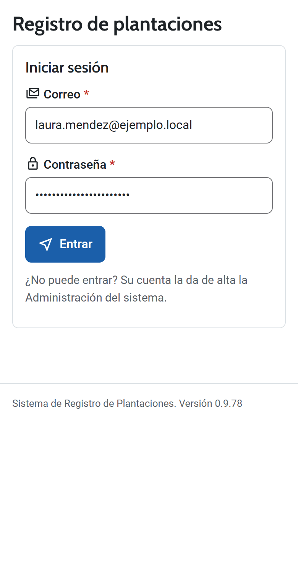
Abra en el navegador del teléfono o de la computadora la dirección del sistema que da el SIA. Escriba su correo y su contraseña, y toque «Entrar».
Al entrar, el teléfono baja los catálogos, las cuentas y los parámetros, y trae lo registrado. La primera vez tarda unos segundos.
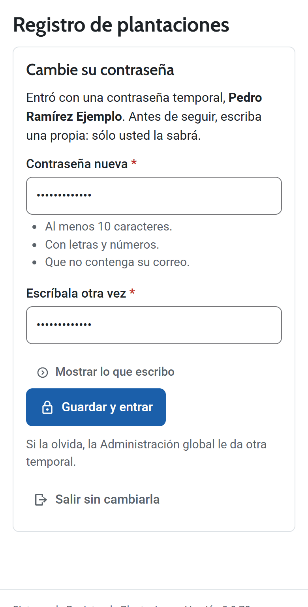
Una cuenta nueva, o una a la que le restablecieron la contraseña, entra con una contraseña temporal. El sistema no deja hacer nada más hasta escribir una propia:
«Salir sin cambiarla» regresa a la entrada; la temporal sigue sirviendo hasta que vence.
La sesión sigue abierta mientras se use. Tras una semana sin usarla, el sistema pide la contraseña otra vez, sin perder lo capturado. Para salir, toque el botón de la persona, arriba a la derecha, y «Cerrar sesión».
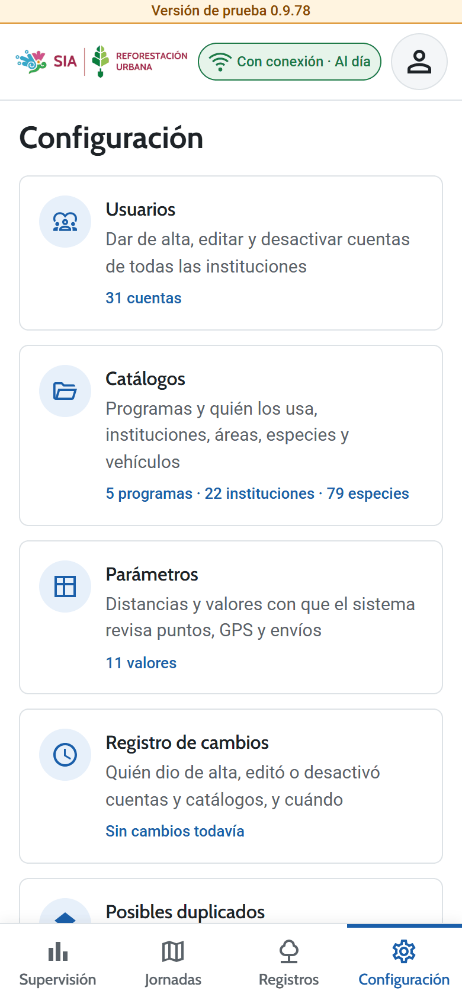
Todo lo de este manual está en la pestaña Configuración. En el teléfono, las pestañas están abajo; en la computadora, arriba.
Cada tarjeta lleva a una parte y dice cómo está:
Arriba, la franja «Con conexión · Al día» dice si el teléfono tiene conexión con el servidor. Sin conexión, Configuración se puede consultar pero no cambia: el sistema lo dice, y hay que volver a hacer el cambio cuando haya señal.
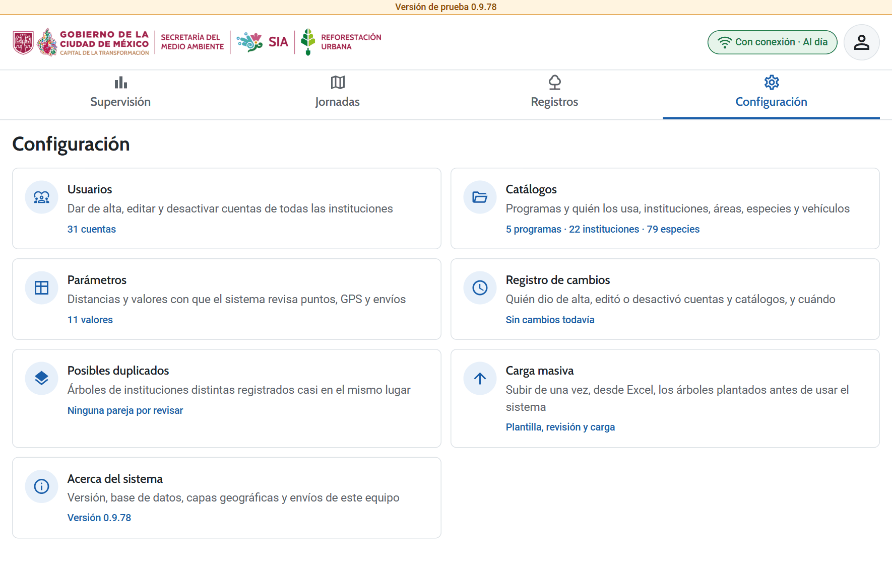
| Perfil | Qué hace |
|---|---|
| Cabo | Registra plantaciones y ve, edita y elimina únicamente las suyas; descarga sus fotografías. |
| Coordinador | Registra, y ve, edita y elimina los registros de los cabos que tiene asignados y los suyos. Elimina también las jornadas vacías y pasa una jornada abierta a otro cabo de su cuadrilla (relevo). |
| Directivo | Ve las jornadas, los registros, las fotografías y el avance, y descarga los reportes ya generados. No registra ni modifica. En la Secretaría ve toda la Ciudad; en otra institución, sólo la suya. |
| Administración global | Ve, edita y elimina todo, y administra los catálogos y las cuentas. No captura registros. |
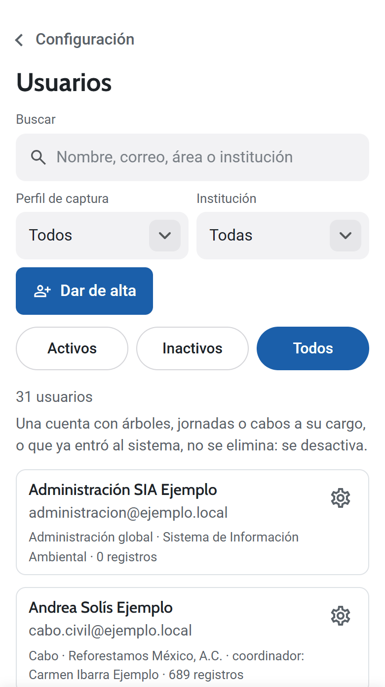
Configuración › Usuarios enseña todas las cuentas. Puede buscar por nombre, correo, área o institución, filtrar por perfil y por institución, y elegir «Activos», «Inactivos» o «Todos».
Cada tarjeta dice el perfil, el área o la institución, sus coordinadores o a cuántos cabos coordina, y cuántos registros tiene. Su cuenta lleva la marca «usted».
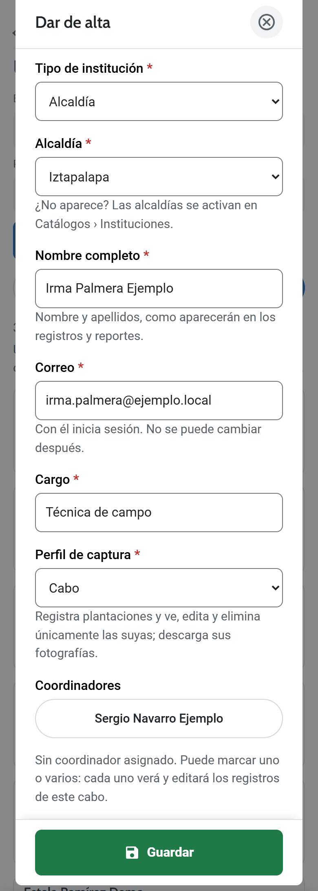
Si algo falta o no cumple una regla, el formulario lo dice en su campo y no se guarda nada.
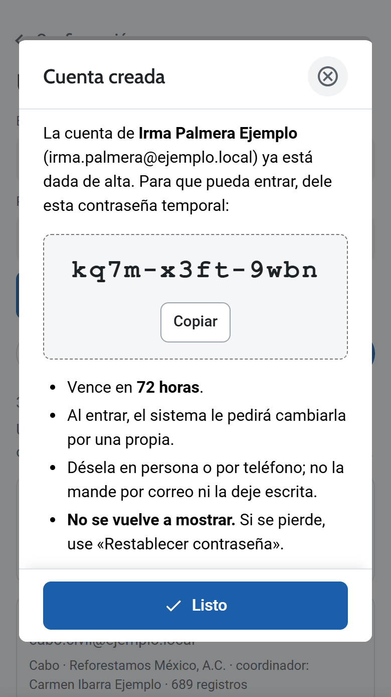
Al guardar se abre la ventana «Cuenta creada» con la contraseña temporal de la persona, en letra grande para dictarla sin confundir caracteres.
La contraseña de la captura es de ejemplo.
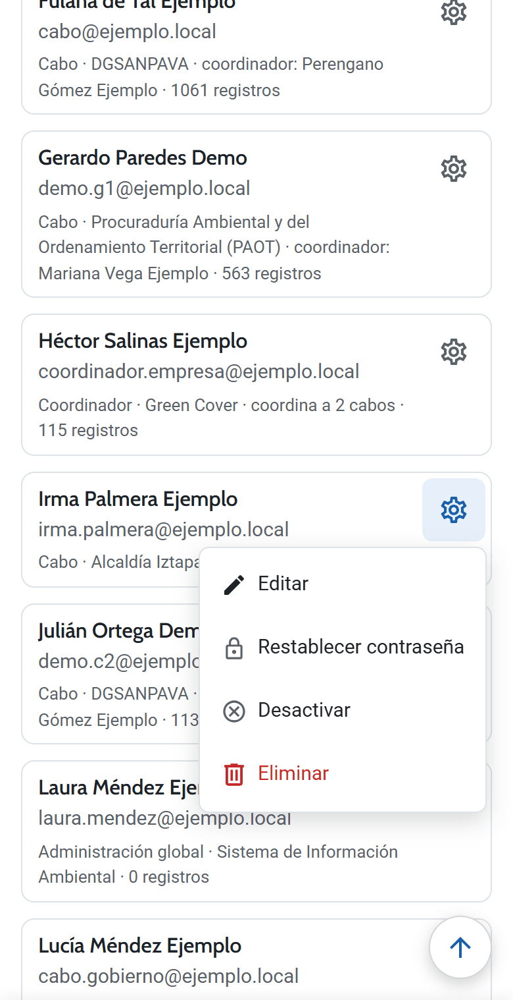
Toque la tuerca de la cuenta. Según la cuenta aparecen:
En su propia cuenta sólo aparece «Editar»: nadie se desactiva, se elimina ni se restablece a sí mismo.
Se cambian nombre, institución, área, cargo, perfil y coordinadores; el correo no. Dos reglas:
Un cambio de perfil o de institución vale de inmediato en el servidor; el teléfono de la persona se pone al día la próxima vez que abre la aplicación con señal.
Úselo cuando la persona olvidó su contraseña, se bloqueó su cuenta o venció su temporal. El sistema pregunta antes, porque:
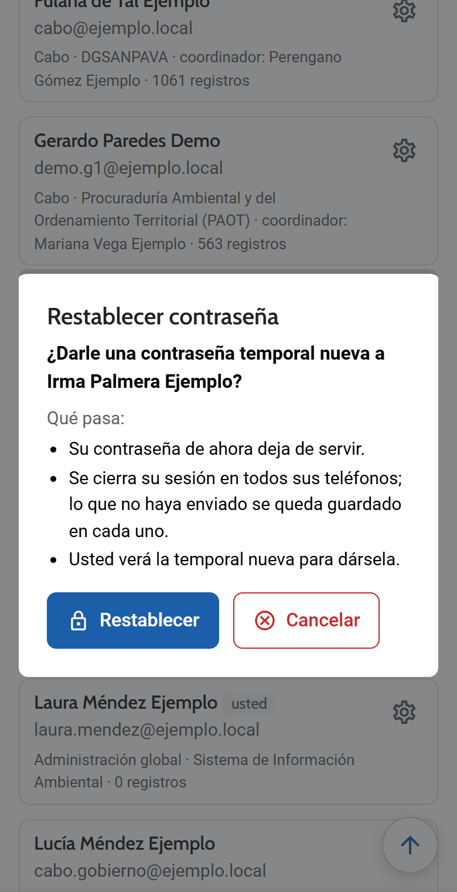
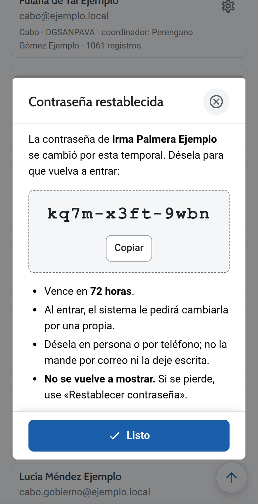
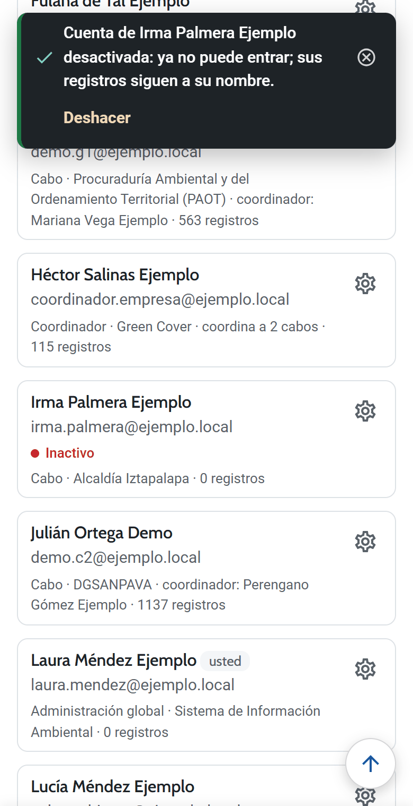
Desactive la cuenta de quien deja de trabajar en el programa o ya no debe entrar:
No pregunta: el aviso de abajo ofrece «Deshacer» unos segundos. Para volver a activarla después, use «Activar» en su tuerca. En la lista, una cuenta desactivada dice «Inactivo».
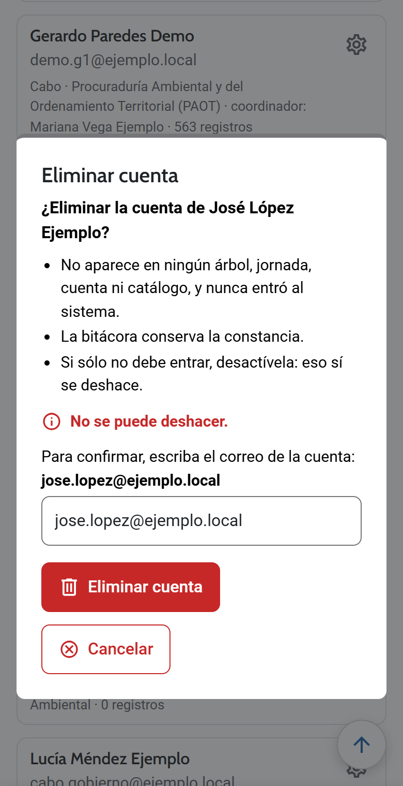
Eliminar es para una cuenta dada de alta por error: con el correo mal escrito, repetida o que nunca se usó. Sólo aparece si la cuenta no aparece en ningún árbol, jornada, cuenta ni catálogo, no coordina cabos y nunca entró al sistema.
Para confirmar se escribe el correo de la cuenta. No se puede deshacer; el Registro de cambios conserva la constancia.
Una cuenta que ya entró o que tiene registros no se elimina: se desactiva. La nota de la lista lo recuerda.
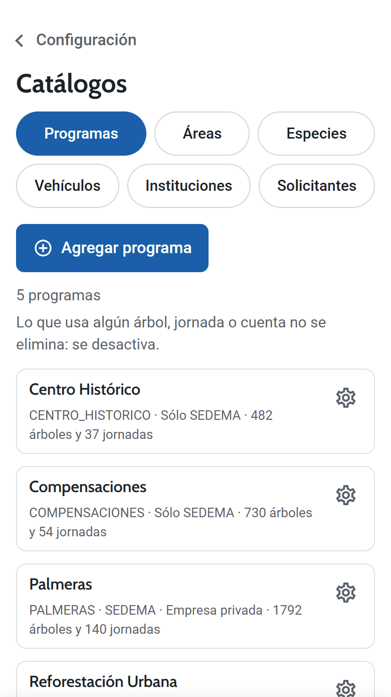
Los catálogos son las listas que se eligen al registrar. Son seis, uno por botón:
| Programas | El programa de cada jornada, y qué tipos de institución lo pueden elegir. |
| Áreas | Las áreas de la Secretaría, para sus cuentas. |
| Especies | El catálogo de especies del SIA, con su clave ESP-0000. |
| Vehículos | Placa, modelo y tipo; sólo para las jornadas de la Secretaría. |
| Instituciones | Las 16 alcaldías y las instituciones que usan el sistema. |
| Solicitantes | Quién pide una «Solicitud especial». |
Cada renglón dice cuántos árboles, jornadas o cuentas lo usan.
Los teléfonos reciben los catálogos al entrar y cada vez que abren la aplicación con señal.
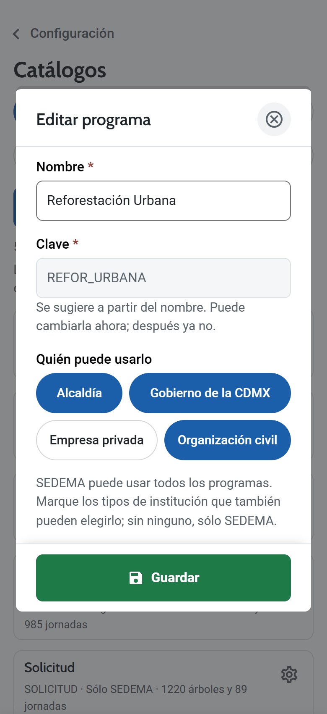
La Secretaría puede usar todos los programas. En «Quién puede usarlo» se marcan los tipos de institución que también pueden elegirlo: alcaldía, Gobierno de la CDMX, empresa privada u organización civil. Sin ninguno marcado, el programa es sólo de la Secretaría.
La clave de un programa se sugiere a partir del nombre y se puede cambiar al darlo de alta; después ya no.
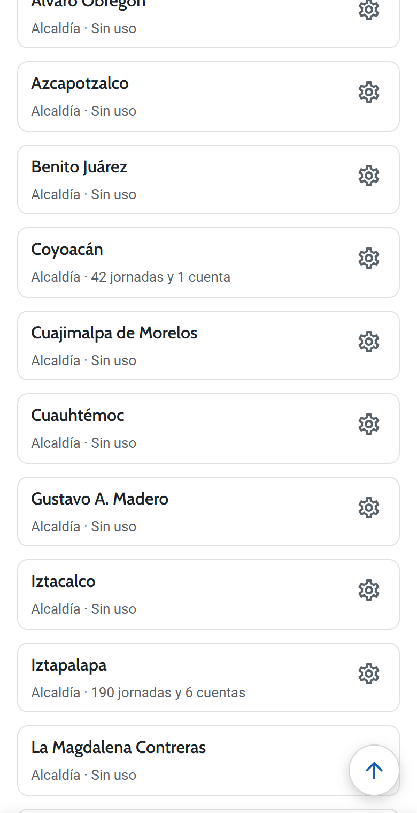
Una especie nueva toma la clave ESP siguiente, con su nombre común y científico, distribución, paleta vegetal y fruto comestible. Si la especie viene del catálogo del SIA, use sus mismos datos. Un vehículo se da de alta con su placa, de 4 a 12 letras y números, su modelo y su tipo.
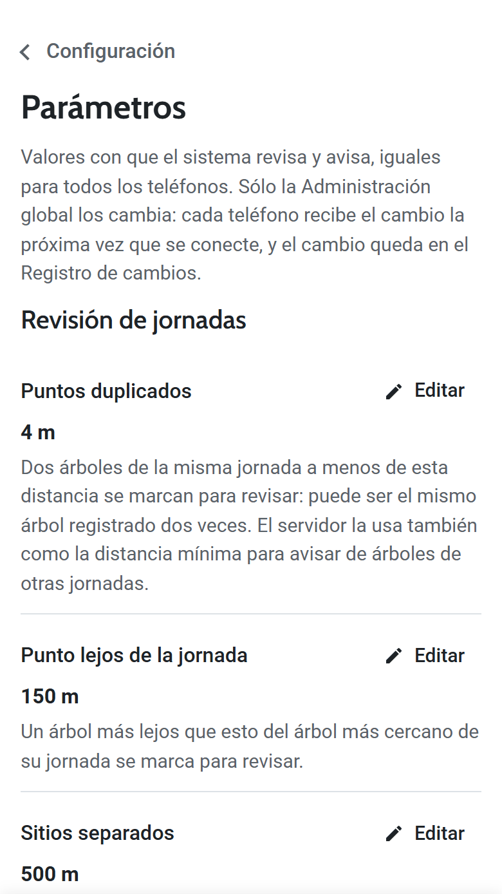
Los parámetros son los valores con que el sistema revisa y avisa. Son iguales para todos los teléfonos, y cada teléfono recibe un cambio la próxima vez que se conecta. Están en cuatro grupos:
Cada valor explica para qué sirve. El que no es el de arranque dice cuándo y quién lo cambió.
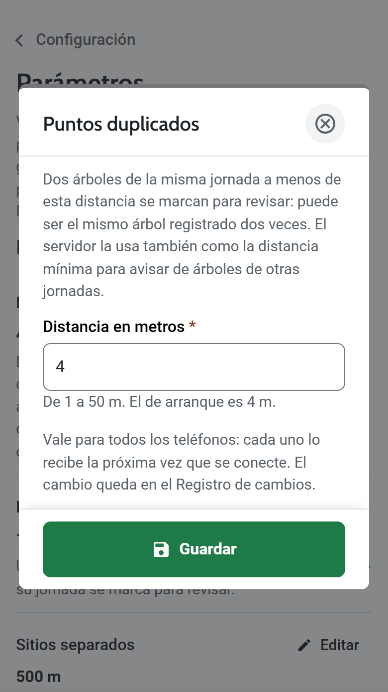
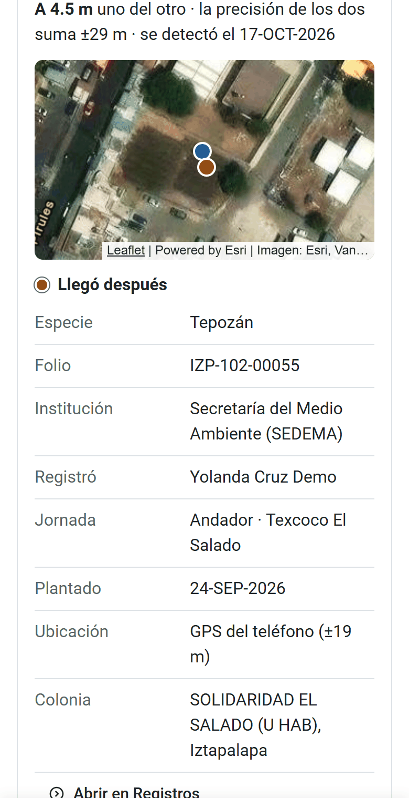
Al recibir un árbol, el servidor busca otro de la misma especie, de otra institución, más cerca que la suma de la precisión de los dos GPS. Nunca usa menos que el parámetro «Puntos duplicados». Puede ser el mismo árbol contado dos veces.
El árbol se recibe igual y la pareja llega a esta bandeja. Ninguna de las dos instituciones ve la marca: sólo la Administración global.
La tarjeta de Configuración dice cuántas parejas hay por revisar. Cada pareja enseña:
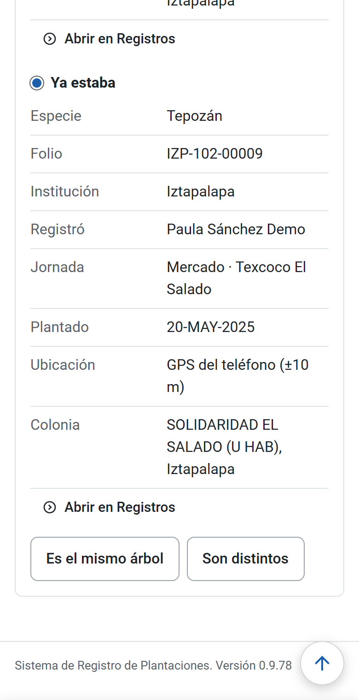
«Mostrar» cambia entre las parejas por revisar, las revisadas, que dicen quién decidió y qué, y todas. Si uno de los dos árboles se elimina, la pareja deja de estar pendiente.
La carga masiva del histórico no pasa por esta bandeja.
Sirve para subir de una vez los árboles plantados antes de usar el sistema. Para lo que se planta de ahora en adelante, las cuadrillas registran en campo.
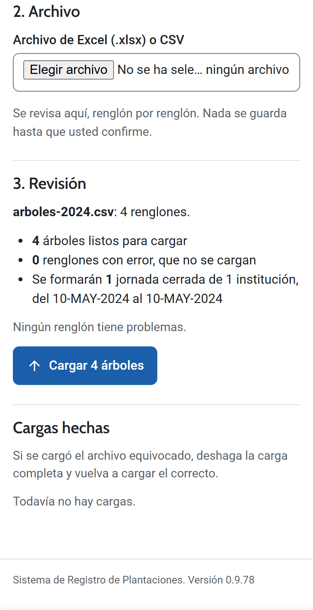
«Descargar plantilla» baja un Excel con las columnas, las instrucciones y las listas válidas de especies, programas e instituciones. Cada renglón es un árbol con:
Hasta 20,000 renglones por archivo. Si son más, divídalos en varios archivos.
En «Archivo», elija el Excel o un CSV. Se revisa en el mismo equipo, renglón por renglón, y nada se guarda hasta que usted confirme. La revisión dice:
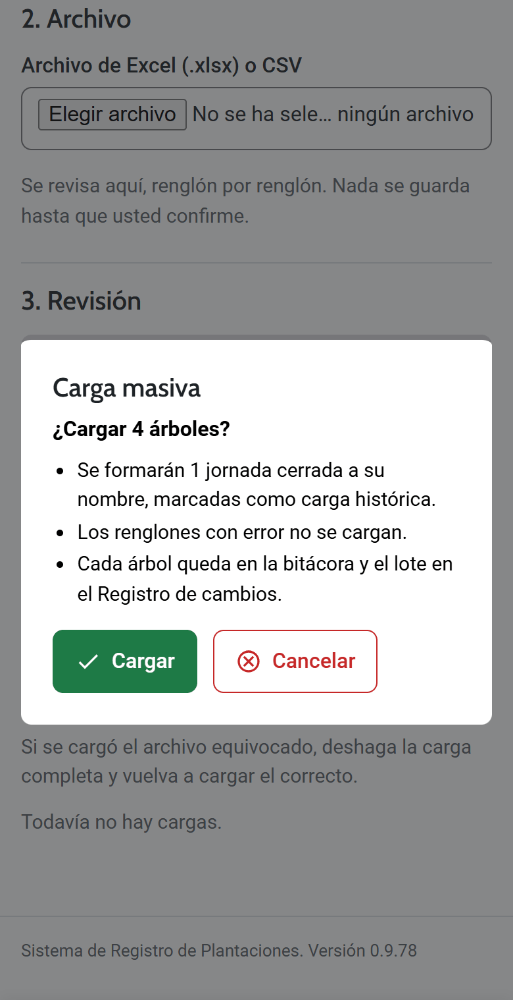
Toque «Cargar N árboles» y confirme. El archivo sube al servidor por partes, y el botón dice «Subiendo tanda N de M…». No cierre la página hasta que termine. Nada se ve hasta que llega completo.
Los árboles quedan a su nombre, en jornadas cerradas marcadas como carga histórica: una por institución, fecha, programa y alcaldía. Cada árbol recibe su folio y su ubicación como cualquier otro.
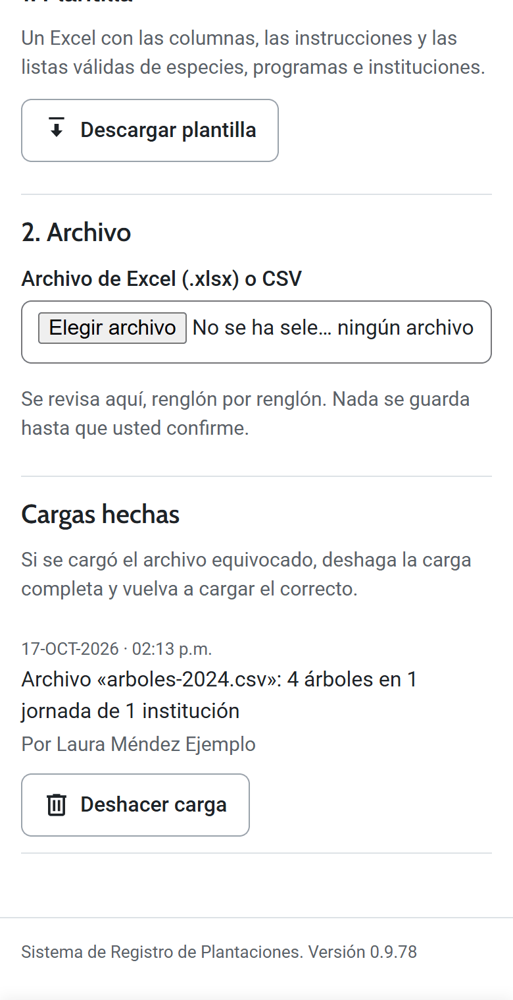
Abajo, «Cargas hechas» lista cada carga: archivo, cuántos árboles y jornadas, quién y cuándo.
Si se cargó el archivo equivocado, «Deshacer carga» (pide escribir DESHACER):
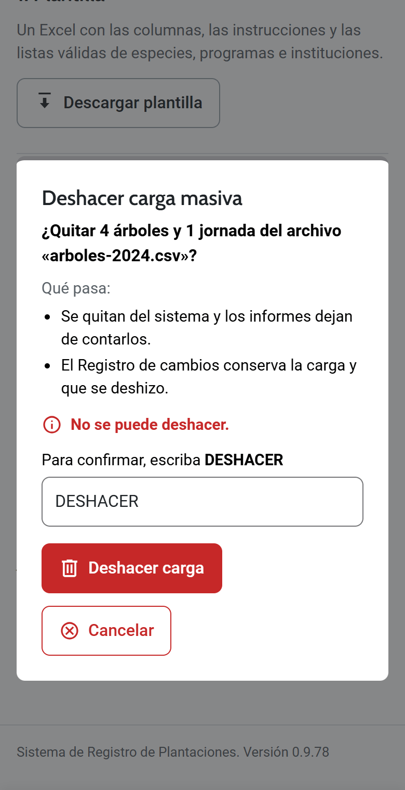
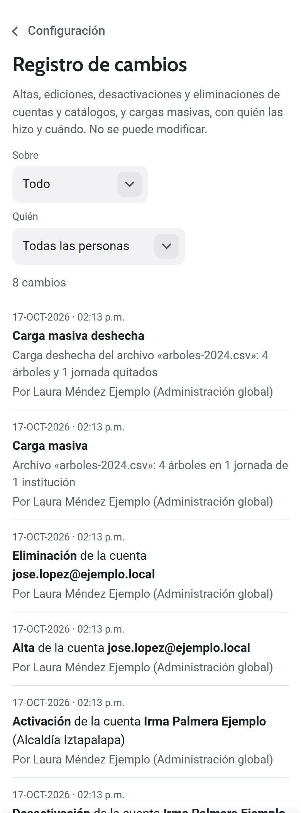
Configuración › Registro de cambios lista, de lo más reciente a lo más antiguo:
Cada renglón dice qué pasó, quién lo hizo, con su perfil, y cuándo. Se puede filtrar por tipo de cambio y por persona. Nadie lo puede modificar, ni siquiera la Administración.
Lo que se le hace a cada árbol, como el alta, el folio, las ediciones o la eliminación, está en su propio historial, en el detalle del árbol en Registros.
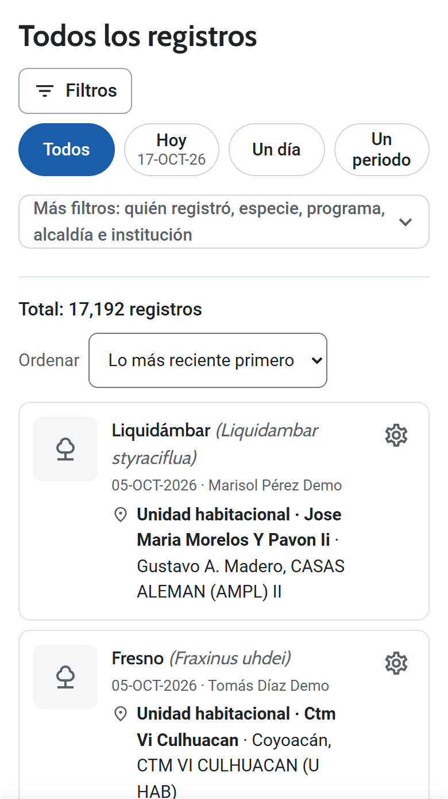
La Administración global ve todo lo de la Ciudad en las otras tres pestañas, como la dirección:
Además puede editar y eliminar cualquier registro, editar cualquier jornada y eliminar las jornadas vacías. Un árbol eliminado no se borra: se marca y se puede restaurar.
Si un cabo tiene cambios que el servidor no aceptó, su teléfono se lo dice con una franja y el botón «Revisar». Ahí decide qué hacer con cada uno: enviarlo otra vez, quedarse con lo del servidor, corregirlo, eliminarlo o descartarlo.
| Si… | Qué hacer |
|---|---|
| Alguien olvidó su contraseña, se bloqueó o le venció la temporal | Usuarios › tuerca de su cuenta › «Restablecer contraseña», y désele la temporal nueva en persona o por teléfono. |
| Usted olvidó su contraseña | Pídale a otra Administración global que se la restablezca. Si no hay otra, al SIA. |
| Alguien deja de trabajar en el programa | Desactive su cuenta. Sus registros se conservan. |
| Una cuenta se dio de alta con el correo mal escrito | Si nunca entró, elimínela y dé de alta otra con el correo correcto. Si ya entró, desactívela y dé de alta otra. |
| Una institución nueva pide cuentas | Catálogos › Instituciones › «Agregar institución»; después, Usuarios › «Dar de alta». |
| Una alcaldía empieza a usar el sistema | Catálogos › Instituciones: actívela; después dé de alta sus cuentas. |
| Un cabo cambia de coordinador | Edite la cuenta del cabo y marque su nuevo coordinador. |
| Un coordinador cambia de institución | Primero asigne sus cabos a otra persona, editando cada cabo; después edite su institución. |
| Una institución deja de participar | Desactívela en Catálogos › Instituciones: ninguna de sus cuentas podrá entrar. |
| Un programa, especie o vehículo ya no se usa | Desactívelo: deja de ofrecerse y lo registrado no cambia. |
| Hay parejas en «Posibles duplicados» | Revíselas (sección 8). Si son el mismo árbol, elimine uno. |
| Se cargó un archivo equivocado | «Deshacer carga» en Configuración › Carga masiva, y vuelva a cargar el correcto. |
| No hay conexión | Configuración se consulta pero no cambia. Vuelva a intentar con señal. |
| El sistema no abre para nadie, o algo dice que avise a la Administración | Avise al SIA con la versión que dice «Acerca del sistema» y lo que aparece en la pantalla. |